You will see the Supervisor Dashboard with key metrics:
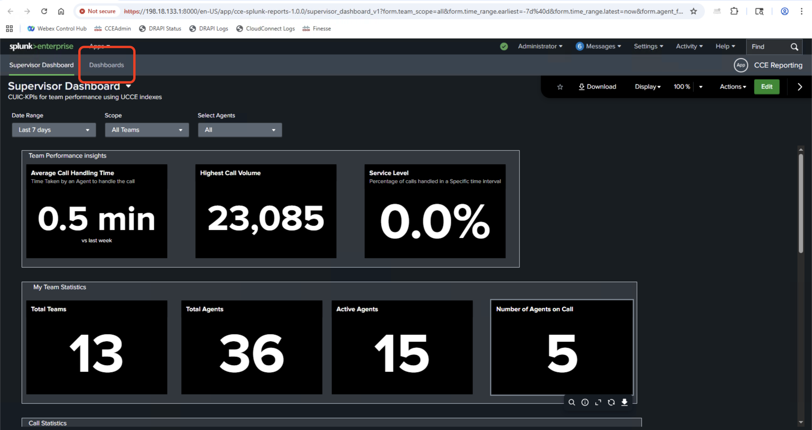Splunk Supervisor Dashboard showing team performance insights
Run Agent Real Time Report
Navigate to Dashboards tab
Under Dashboard tab search for "Agent Real Time"
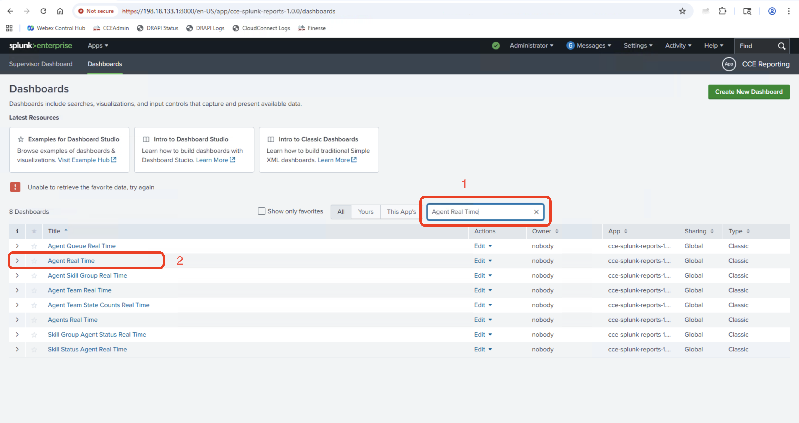Splunk Dashboards list - search for Agent Real Time
Click on the "Agent Real Time" report link
Splunk will open the Agent Real Time dashboard showing live agent data:
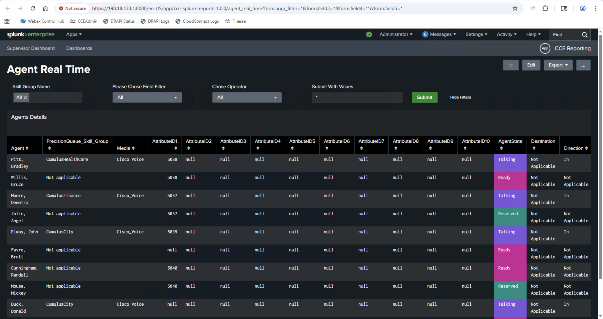Splunk Agent Real Time dashboard showing agent details with real-time status
Step 3: Compare Results
Compare Results in CUIC and Splunk - Validate if Splunk refreshes the report every 30 seconds and shows fresh data - Validate the data matches with CUIC Reports
Part B: Skill Group Status Graphical Real-time
Step 1: Access CUIC Skill Group Status Report
Navigate to CUIC Report
Open CUIC web interface.
Navigate to Reports on left navigation panel
Search for Skill Group Status Graphical Real Time report in the search bar.
Click on the Skill Group Status Graphical Real Time report
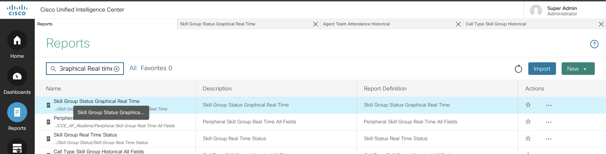Screenshot of CUIC skill group status graphical report
In the Filter Modal select All Skill Groups and click >> icon
Screenshot of CUIC skill group status graphical report
Step 2: Access Equivalent Splunk Report
Open Splunk web interface
Navigate to CCE Reporting app
Navigate to Dashboards tab
Under Dashboard tab search for "Skill Group Status Graphical Real Time"
Click on the "Skill Group Status Graphical Real Time" report link
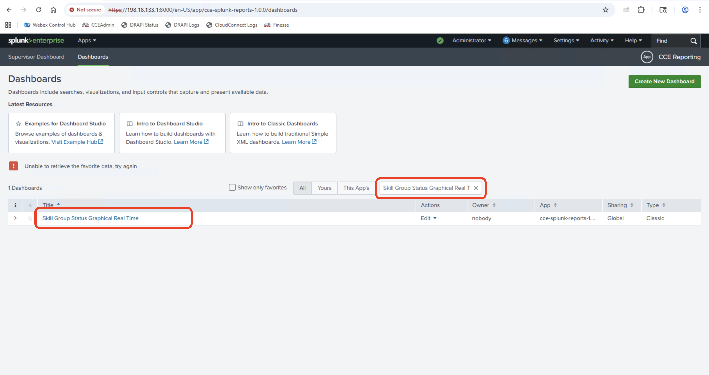Screenshot of Splunk skill group status graphical report
Select same filter as CUIC Filter and the folowing report should show
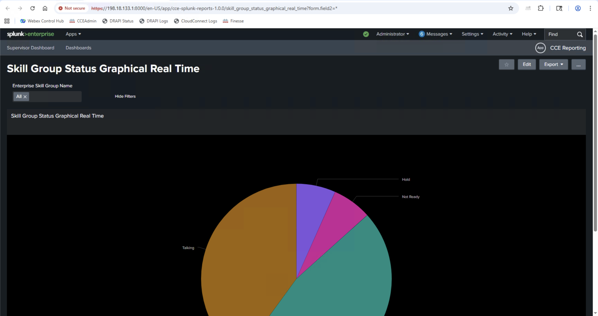Screenshot of Splunk skill group status graphical report results
Step 3: Compare Results
Compare Results in CUIC and Splunk - Validate if Splunk refreshes the report every 30 seconds and shows fresh data - Validate the data matches with CUIC Reports and graphs are similar
Part C: Agent Team Attendance Historical
Step 1: Access CUIC Agent Team Attendance Historical Report
Navigate to CUIC Report
Open CUIC web interface.
Navigate to Reports on left navigation panel
Search for Agent Team Attendance Historical report in the search bar.
Click on the Agent Team Attendance Historical report
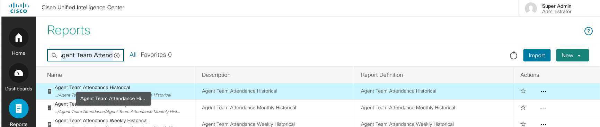Screenshot of CUIC team attendance historical report interface
In the Filter Modal select custom date range.
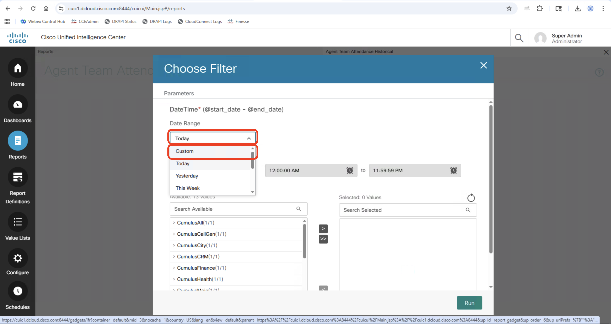Screenshot of CUIC team attendance historical report Filter Custom Date Range
Select a start date which is 7 days ago.
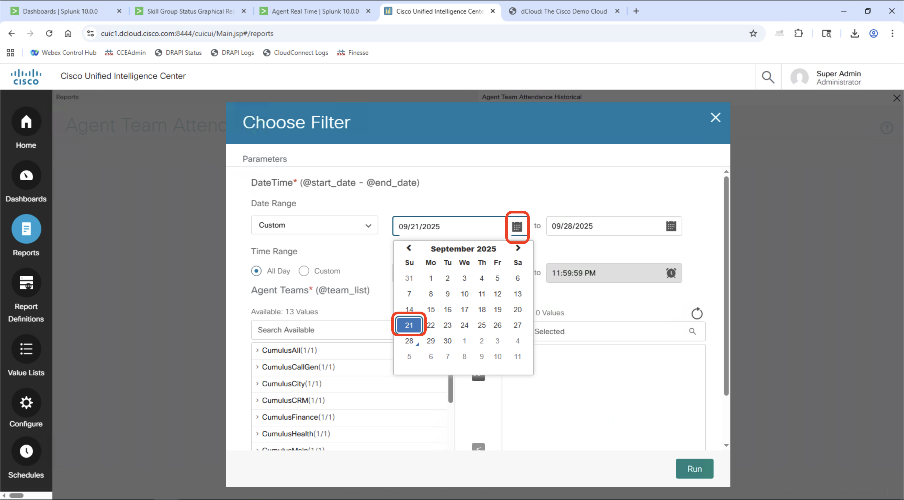Screenshot of CUIC team attendance historical report Filter Custom Date Range Start Date
Select all Agent Teams by clicking on >> button.
Click on Run Button
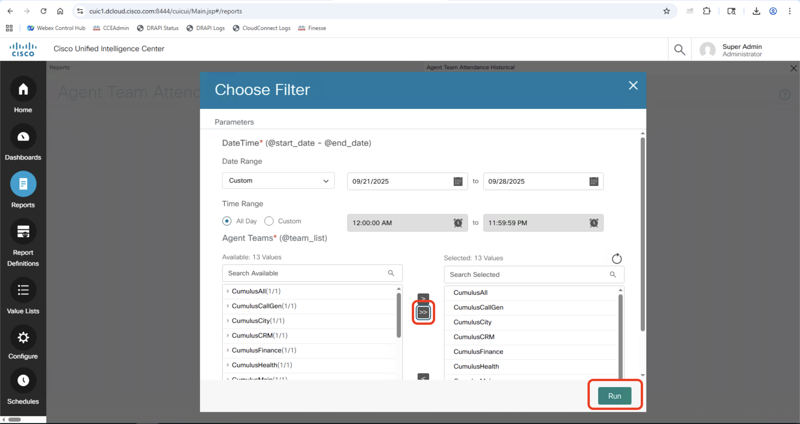Screenshot of CUIC team attendance historical report Filter Custom Date Range Start Date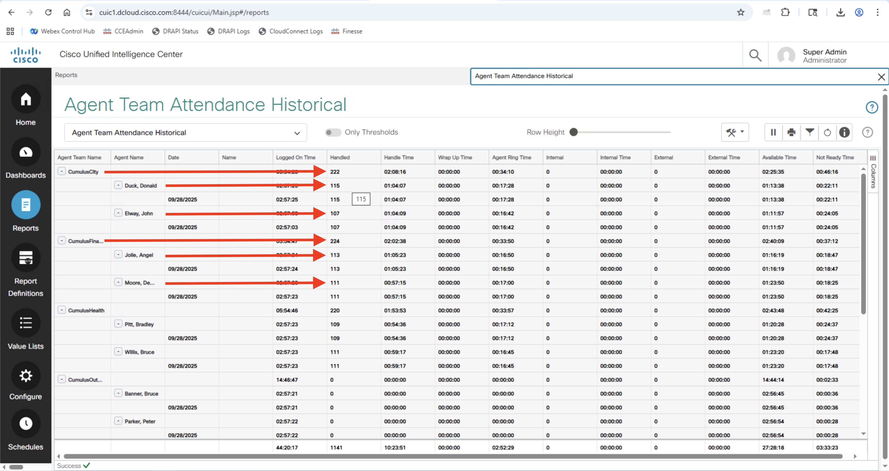Screenshot of CUIC team attendance historical report Filter Custom Date Range Start Date
Step 2: Access Equivalent Splunk Report
Login to Splunk
Open Splunk web interface
Navigate to CCE Reporting app
Navigate to Dashboards tab
Under Dashboard tab search for "Agent Team Attendance Historical"
Click on the "Agent Team Attendance Historical" report link
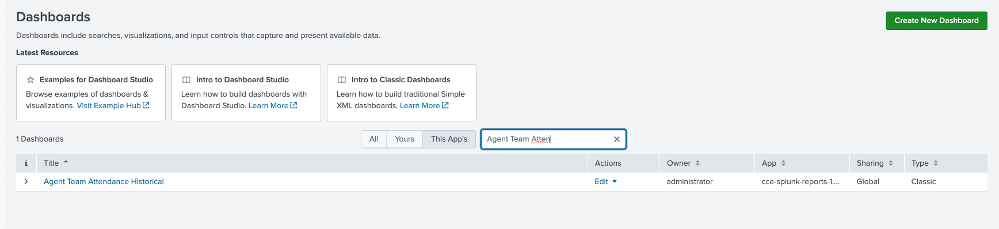Screenshot of Splunk team attendance historical report
Select same date range and team filters as CUIC Filter (by default last 7 days is selected) and the following report should show
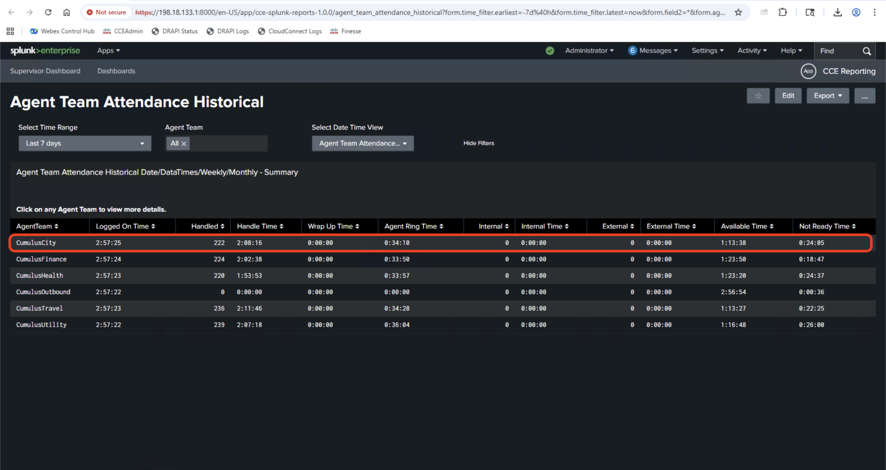Screenshot of Splunk team attendance historical report results
Click on the 1st row to drill-down
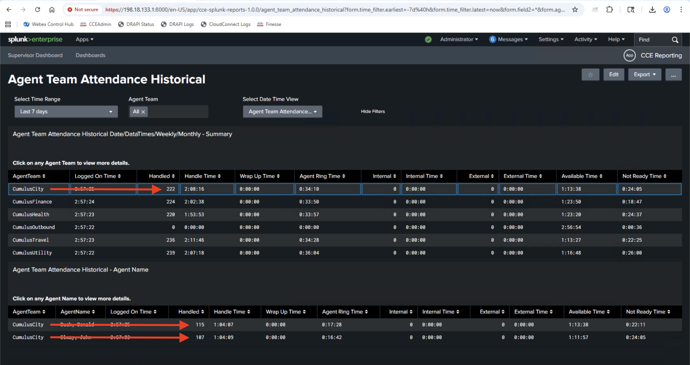Screenshot of Splunk team attendance historical report results
Step 3: Compare Results and Drill-down Capabilities
Compare Results in CUIC and Splunk:
- Validate the attendance data matches between CUIC and Splunk reports
- Test drill-down functionality in Splunk to get detailed agent information
- Validate historical data accuracy for the selected date range
Exercise 1 Summary
Key Comparisons Completed
Agent Real-time Report: Real-time agent status and state information
Skill Group Status Graphical Real-time: Queue and service level monitoring
Agent Team Attendance Historical: Historical attendance and productivity data
Benefits Demonstrated
Data Fidelity: Splunk shows the same accurate data as CUIC reports
{kind=link}
{kind=link}
{kind=link}
{kind=link}
{kind=link}
{kind=link}
{kind=link}
{kind=link}
{kind=link}
{kind=link}
{kind=link}
{kind=link}
{kind=link}
{kind=link}
{kind=link}
{kind=link}
{kind=link}
{kind=link}
{kind=link}
{kind=link}
{kind=link}
{kind=link}
{kind=link}